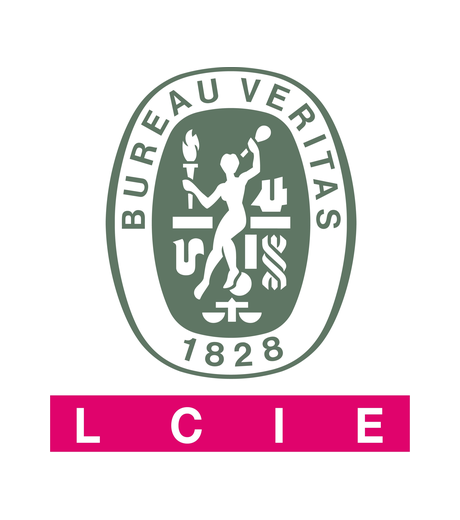
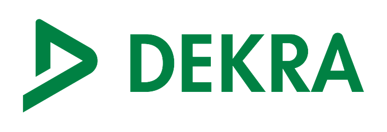
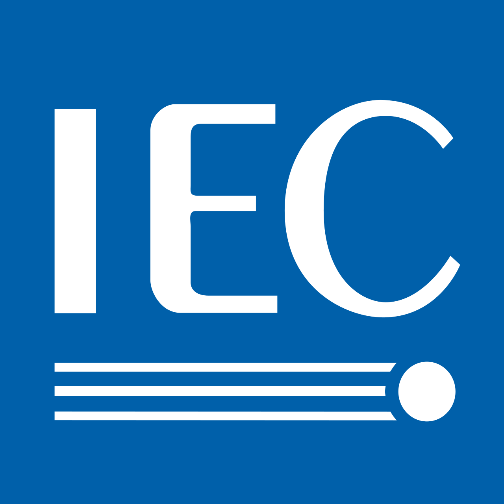
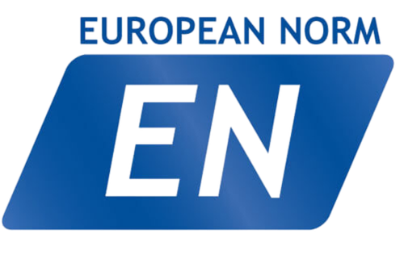

UE LABS
Réseau d’essais, de certification et de validation des produits
Universal Enclosures LoB
Customer Satisfaction & QualityModèle opérationnel
Gouvernance UE Labs
Ligne hiérarchique pertinente des laboratoires dans l’organisation Customer Satisfaction & Quality.
Responsable Customer Satisfaction & Quality
Organisation CS&Q
SU LAB TEAM LEADER
Labs Test & Expert Leader
Directeur technique des laboratoires
SU
Sarre-Union Lab
France
KP
Capellades Lab
Espagne
ML
Molins de Rei Lab
Espagne
Techniciens de laboratoire
2 rôles techniques
Technicien de laboratoire
1 rôle technique
Technicien de laboratoire
1 rôle technique

Réseau de laboratoires
Réseau de trois laboratoires
Réseau UE Labs : SU, ML et KP en France et en Espagne.

Réseau UE Labs : SU / ML / KP


KP | Espagne
Capellades Lab
Capellades prend en charge la vérification de production des gammes PanelSeT Steel Enclosures, avec une reconnaissance UL CTDP pour une autonomie de test qualifiée.
KP
Capellades Lab
Espagne
Périmètre de validation KP
PanelSeT Steel, validation et certification
Capellades Lab accompagne la vérification de production des coffrets métalliques avec une reconnaissance UL CTDP pour une autonomie d’essais qualifiée.
KP
Validé à Capellades
Vérification PanelSeT Steel et capacité de certification UL CTDP.
Famille produit 3D
Exemple 3D PanelSeT Steel
Capacité de certification

Laboratoire principal utilisé pour la validation des normes
Organismes et partenaires de certification sélectionnés




- Et plus

SU | France
Sarre-Union Lab
Sarre-Union se concentre sur la vérification des coffrets PanelSeT acier, acier inoxydable et applications spécifiques.
SU
Sarre-Union Lab
France
Périmètre de validation SU
PanelSeT, validation des coffrets
Sarre-Union Lab vérifie les gammes PanelSeT Steel, Stainless-Steel et Specific Applications au sein du réseau UE Labs.
SU
Validé à Sarre-Union
Coffrets acier, inox et applications spécifiques.
Depuis 2026, les Nuclear Painting tests sont conduits à Sarre-Union.

Périmètre de certification
Périmètre des normes et certifications
Normes d’origine reconstruites sous forme de matrice de capacités par laboratoire.
SU
Sarre-Union
ML
Molins de Rei
KP
Capellades

IEC
EN
UL /CSA
IEC 62208
IEC 60079-0
IEC 62208
IEC 61439-1
IEC 61439-5
IEC 62208
ISO 12944-6
ISO 4624
ISO 12944-6
EN 61386-1
UL 50 / CSA C22.2 N° 94.1
UL 50E / CSA C22.2 N° 94.2
UL 746 C

UE LABS
Confiance dans les essais. Préparation à la certification. Qualité produit.